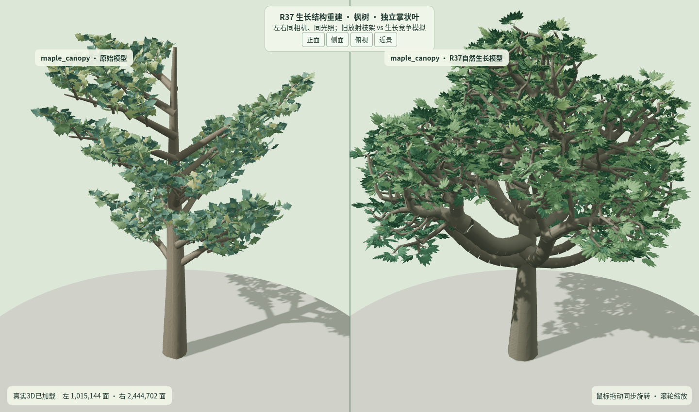
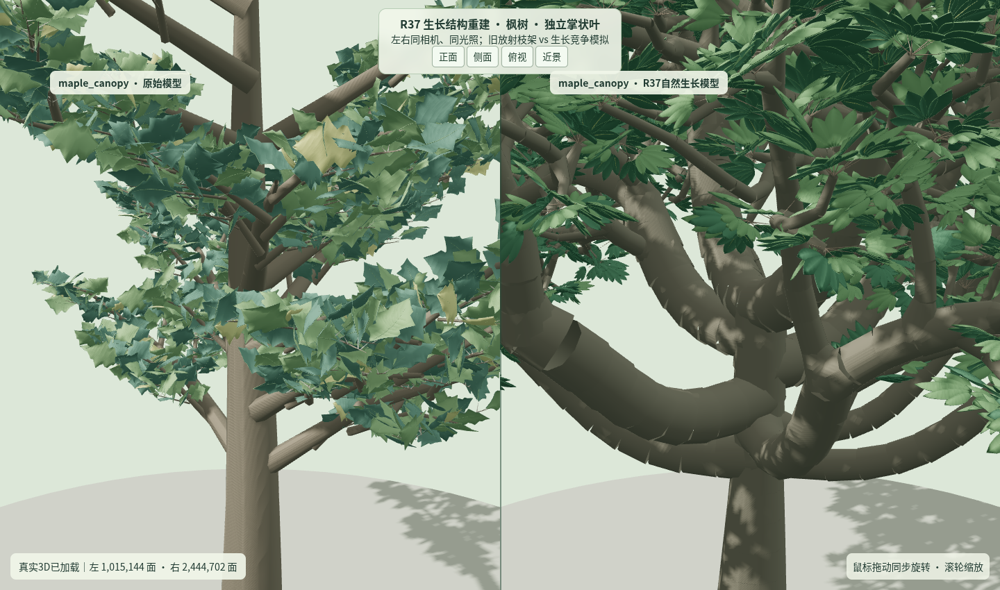

R36 vs R37 · 树木结构改变
左边依旧是固定放射状树枝，右边是独立生长的枝条与五裂叶片。左右可以同步旋转与放大近景。
查看可操作3D A/B本轮放弃规则放射式树枝建模，改用树冠吸引点驱动的分枝生长、逐级枝干粗细以及成片但并不相同的五裂枫叶。下面是相同灯光和相机的真实浏览器截图，不是AI概念图。

左边依旧是固定放射状树枝，右边是独立生长的枝条与五裂叶片。左右可以同步旋转与放大近景。
查看可操作3D A/B
重点检查枝条连接、叶片体积、疏密交错和遮挡。没有把“树冠球”作为背景模型。
打开真实近景截图